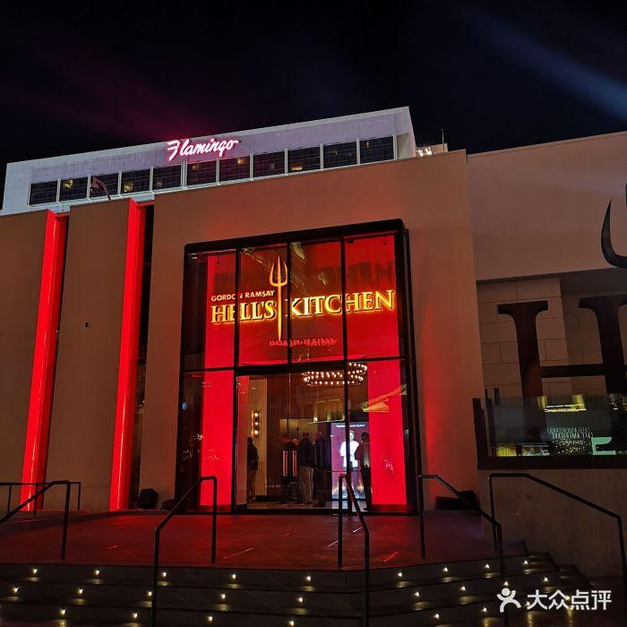
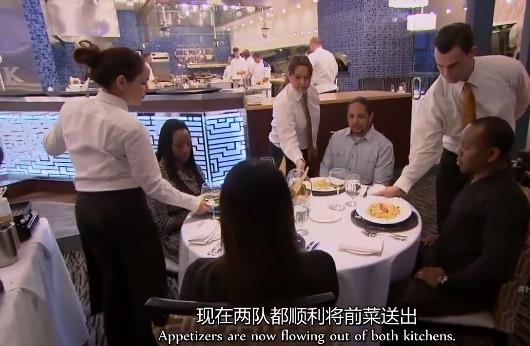
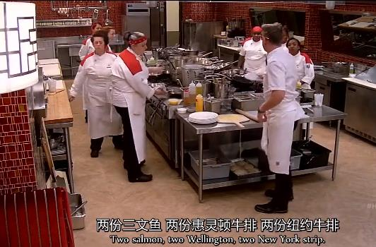
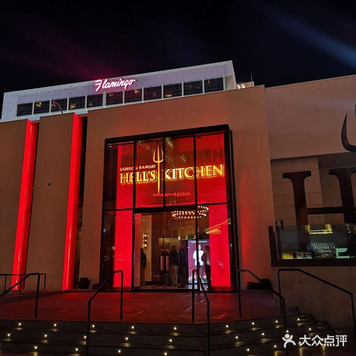
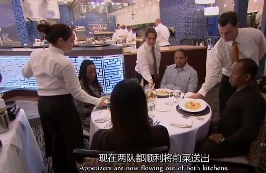
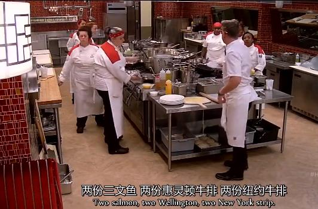

地狱厨房是一档烹饪实境秀，Gordon担任主持人，专业厨师组成红蓝两队，在正常营业的餐厅后厨进行比拼，而这个餐厅的名字就叫Hell’s Kitchen。我对这个节目的喜欢程度要排在Master Chef之后，它的氛围远不如Master Chef友好，全是混战和互撕，还是能让你血压飙升的那种。



狗蛋在Master Chef里的画风可能是这样的：

很火的地狱厨房来啦！ |
地狱厨房是一档烹饪实境秀，Gordon担任主持人，专业厨师组成红蓝两队，在正常营业的餐厅后厨进行比拼，而这个餐厅的名字就叫Hell’s Kitchen。我对这个节目的喜欢程度要排在Master Chef之后，它的氛围远不如Master Chef友好，全是混战和互撕，还是能让你血压飙升的那种。 |
|||
 |
 |
 |
|
狗蛋在Master Chef里的画风可能是这样的： |
|||
|
|||
然鹅，在地狱厨房里，他是这样的： |
||||
Gordon Ramsay的米其林三星真的不是白拿的，看了这个节目，你就知道他的要求真的有亿点点高： 盛热菜的盘子必须是热的，冷菜的盘子必须是凉的； 上菜之前一定要确保盘子除了有菜品的地方都是干干净净的，要拿纸巾擦了又擦（看这节目多了可能变得跟他一样强迫症哈哈）; 同一桌顾客点的菜要同时上齐，不能让一位顾客干瞪眼看着他的小伙伴吃饭； 你会了解到一个有水平的餐厅后厨是怎么井井有条地运作的，知道厨师们一般怎么分工；也会知道一些高档的西餐厅会规定dress code，Gordon Ramsay的米其林三星餐厅要求smart look（好像我们穿T恤牛仔裤进去就会拉低他们的档次......） |
Home Page |
Master Chef |
Hell's Kitchen |
Ramsay's Great Escape |